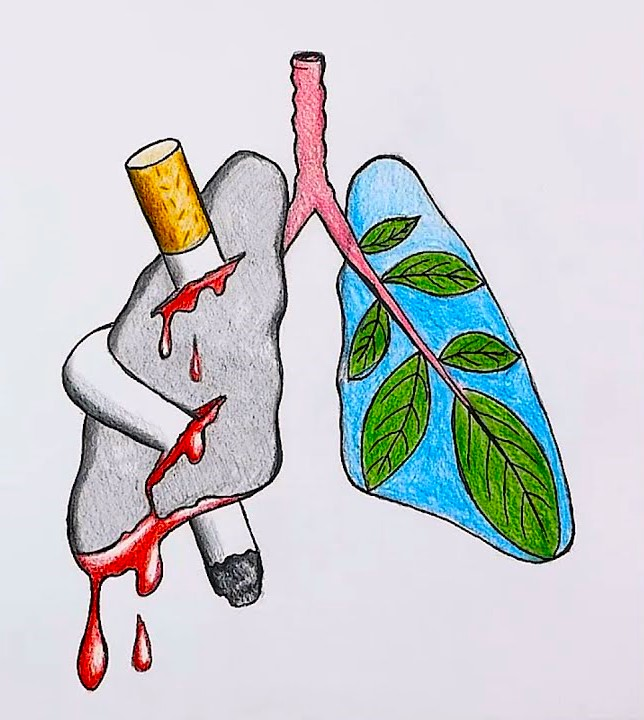

Your health is safe

Drugs are a group of substances that cause addiction and poison the
nervous system The word “drug” is used to re cons to something that
dulls the mind because it contains chemicals that lead to drowsiness
sleep or the absence of consciousness
Drug effect Drug addiction is one of the most
dangerous problems facing the individual or society as the harms of
drug abuse do not only affect the drug addict but also its effects
extend to social and economic damage as if it were a mean enemy that
infiltrates the hearts of many people of the country in a quiet hidden
way but hides within it destruction Terrible
Harmful effects of drugs and addiction
is one of the biggest causes of death and illness in the our world today as it increases risk of
developing
more than 50 serious health risks , one of them is lung cancer as new researches show that smoking is the main
cause
of about 70% of lung cancer conditions in the world , it can also harm other parts in the human body such as :
larynx mouth bladder cervix kidney increase the risk of blood circulation disease smoking also increase risks of
heart disease since it can causes stroke and coronary heart disease, which are among the leading causes of death.
There is also other health consequences of smoking you might not have heard before such as : becoming blind :
Smoking increases your risk of age-related macular degeneration, the leading cause of blindness in adults over
the age of 65 . Type2 diabates : Smoking contributes to type 2 diabetes and increases the risk of complications
from the disease including poor blood flow to legs and feet . Fertility Issues : Moms-to-be take note: Smoking
can affect your ability to conceive. It causes reduced fertility in women and can contribute to other problems
during pregnancy. Smoking gives you dark under eye circles: Research shows that smokers do not sleep as soundly
as non-smokers, and when you don t get enough sleep, you damage your appearance in a number of ways, one of them
is formation of dark circles under your eyes . Your teeth will be yellow : cigarettes deeply stains teeth yellow,
and over time can even turn them brown . Side Effects Of Smoking While Pregnant : smoking during pregnancy is
considered harmful for both mother and the child, it significantly increasing the risk of birth defects, low birth
weight, incomplete development of organs, and cognitive problems, among many others.
To learn about the harms of smoking, you can see the following
link:
Getting rid of addiction
- Stay away from bad friends and addicts.
- Increase awareness of the dangers of drugs.
- Make sure to communicate with family and friends.
- Learn healthy ways to deal with psychological stress.
-
Divide the day correctly to change the routine mood that leads to
depression.
-
Sports, art, and meditation are ideal ways to protect young people
from addiction.
-
Confront the problem that led you to addiction in a correct way to
solve it without relying on anyone.
Information about the Recovery Hospital for addiction treatment
| Therapeutic phase |
Duration of the treatment phase |
Cost for Egyptian patients |
Cost for Arab and foreign patients |
| Removing toxins and treating withdrawal symptoms without pain |
Form 10-15 days |
Starting from 350 pounds per day |
Starting from $100 |
| Psychotherapy and behavioral rehabilitation |
From 3-6 months |
Ranging from 12-30 thousand pounds per month |
Ranging between $1500-5000 per month |